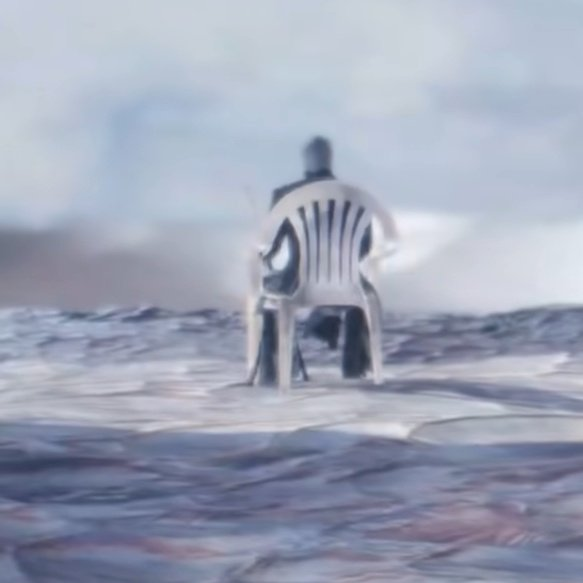
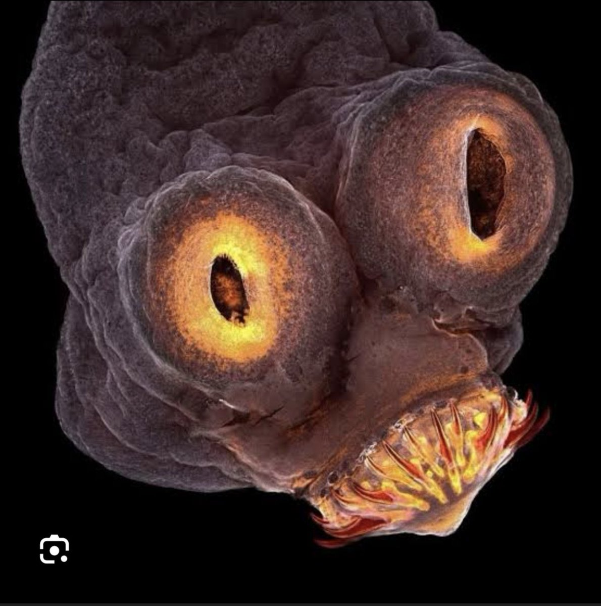
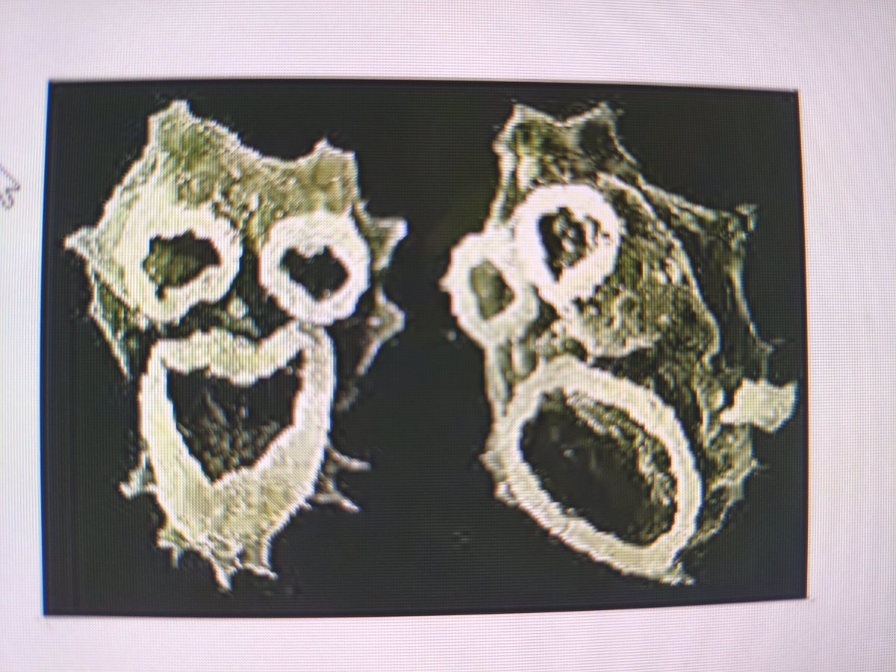
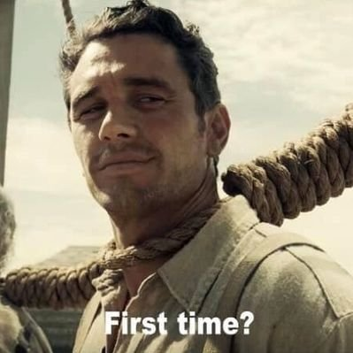

妃宫千早
@neko0202002
@teoriadacons




Teoria Da Constatação 🔎
@teoriadacons
1 - O vídeo é sobre como uma pessoa com esquizofrenia vê e ouve o mundo ao seu redor.
2 - São imagens de 2 PARASITAS ampliadas milhares de vezes no microscópio.
A semelhança não é mera coincidência. https://t.co/xjDvz4YVV9